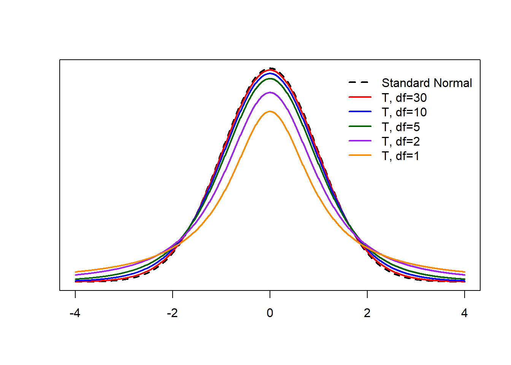

Module 6 Introduction to Confidence Intervals
This module will bridge the gap between our discussion on the normal distribution and our first forays into statistical inference. As it turns out, much of the statistical inference we will use relies on the normal distribution and the t-distribution, which we will introduce in this module. We begin our study of statistical inference by learning about confidence intervals.
Module Learning Objectives/Outcomes
- Find the distribution of a sample mean.
- Estimate probabilities for a sample mean.
- Use the standard normal and t-distributions to find critical values.
- Calculate and interpret confidence intervals for a population mean.
R Objectives
- Find z and t critical values.
- Generate complete confidence intervals for a population mean.
This module’s outcomes correspond to course outcome (6) apply statistical inference techniques of parameter estimation such as point estimation and confidence interval estimation and (7) apply techniques of testing various statistical hypotheses concerning population parameters.
6.1 Sampling Distributions
6.1.1 Sampling Error
We want to use a sample to learn something about a population, but no sample is perfect! Sampling error is the error resulting from using a sample to estimate a population characteristic.
If we use a sample mean \(\bar{x}\) to estimate \(\mu\), chances are that \(\bar{x}\ne\mu\) (they might be close but… they might not be!). We will consider
- How close is \(\bar{x}\) to \(\mu\)?
- What if we took many samples and calculated \(\bar{x}\) many times?
- How would that relate to \(\mu\)?
- What would be the distribution of these values?
The distribution of a statistic (across all possible samples of size \(n\)) is called the sampling distribution. We will focus primarily on the distribution of the sample mean.
For a variable \(x\) and given a sample size \(n\), the distribution of \(\bar{x}\) is called the sampling distribution of the sample mean or the distribution of \(\boldsymbol{\bar{x}}\).
Example: Suppose our population is the five starting players on the Sacramento Kings during their game on April 2, 2024. We are interested in their heights (measures in inches). The full population data is
Player De’Aaron Fox Keon Ellis Harrison Barnes Keegan Murray Domantas Sabonis Height 73 73 78 78 80 The population mean is \(\mu=76.4\). Consider all possible samples of size \(n=2\):
Sample \(\bar{x}\) Fox, Ellis 73 Fox, Barnes 75.5 Fox, Murray 75.5 Fox, Sabonis 76.5 Ellis, Barnes 75.5 Ellis, Murray 75.5 Ellis, Sabonis 76.5 Barnes, Murray 78 Barnes, Sabonis 79 Murray, Sabonis 79 There are 10 possible samples of size 2. Of these samples, none have means exactly equal to \(\mu\).
In general, the larger the sample size, the smaller the sampling error tends to be in estimating \(\mu\) using \(\bar{x}\).
In practice, we have one sample and \(\mu\) is unknown. We also have limited resources to collect data, so it may not be feasible to collect a very large sample.
The mean of the distribution of \(\bar{x}\) is \(\mu_{\bar{X}}=\mu\) and the standard deviation is \(\sigma_{\bar{X}}=\sigma/\sqrt{n}\). We refer to the standard deviation of a sampling distribution as standard error. (Note that this standard error formula is built for very large populations, so it will not work well for our basketball players. This is okay! We usually work with populations so large that we treat them as “infinite”.)
Example: The mean house size in the United States is 2164 ft\(^2\) with a standard deviation of 568 square feet. For samples of 25 homes, determine the mean and standard error of \(\bar{x}\).
Using our formulae: \[\mu_{\bar{X}} = \mu = 2164\] and \[\sigma_{\bar{X}} = \frac{\sigma}{\sqrt{n}} = \frac{568}{\sqrt{25}} = 113.6.\]
6.1.2 The Central Limit Theorem
Consider the setting where \(X\) is Normal(\(\mu\), \(\sigma\)). The plots below show (A) a random sample of 1000 from a Normal(100, 25) distribution and (B) the approximate sampling distribution of \(\bar{X}\) when X is Normal(100, 25).
Notice how the x-axis changes from one plot to the next.
In fact, if \(X\) is Normal(\(\mu\), \(\sigma\)), then \(\bar{X}\) is Normal(\(\mu_{\bar{X}}=\mu\), \(\sigma_{\bar{X}}=\sigma/\sqrt{n}\)).
Surprisingly, we see a similar result for \(\bar{X}\) even when \(X\) is not normally distributed!
For relatively large sample sizes, the random variable \(\bar{X}\) is approximately normally distributed regardless of the distribution of \(X\): \[\bar{X}\text{ is Normal}(\mu_{\bar{X}}=\mu, \sigma_{\bar{X}}=\sigma/\sqrt{n}).\]
Notes
- This approximation improves with increasing sample size.
- In general, “relatively large” means sample sizes \(n \ge 30\).
Section Exercises
- The mean house size in Hong Kong is 484 ft\(^2\) with a standard deviation of 163 ft\(^2\) (this mean is accurate as of 2024, but the standard deviation is a guesstimate for the sake of the problem).
- Determine \(\mu_{\bar{X}}\) and \(\sigma_{\bar{X}}\) for samples of size 22.
- Determine \(\mu_{\bar{X}}\) and \(\sigma_{\bar{X}}\) for samples of size 100.
- For which of the above (\(n=22\) or \(n=100\)) can we assume the sampling distribution is normal, without knowing anything else about the data?
- For a random sample of 100 houses, what is the probability the mean size is less than 400 ft\(^2\)?
- Suppose we have some population with \(\sigma=5\). Determine the proportion of all samples of size 50 that will have means within 0.25 of the population mean.
- Draw and label a normal curve with \(\mu\), \(\mu\pm\sigma\), \(\mu\pm 2\sigma\), and \(\mu\pm 3\sigma\).
- What is the sample size?
- Determine \(\mu_{\bar{X}}\) and \(\sigma_{\bar{X}}\).
- Write an expression to represent the values 0.125 above and below the mean, \(\mu_{\bar{X}}\). (Since we don’t know the value of \(\mu_{\bar{X}}\), you should use \(\mu_{\bar{X}}\) directly in your expression.)
- Determine the z-score for each of the values you found in part (d).
- Use your result from part (e) to determine the proportion of all samples of size 50 that will have means within 0.25 of the population mean.
6.2 Developing Confidence Intervals
Recall: A point estimate is a single-value estimate of a population parameter. We say that a statistic is an unbiased estimator if the mean of its distribution is equal to the population parameter. Otherwise, it is a biased estimator.
Comment: Remember how our formula for sample variance, the “mean squared deviance” divides by \(n-1\) instead of \(n\)? We do this so that \(s\) is an unbiased estimate of \(\sigma\).
Ideally, we want estimates that are unbiased with small standard error. For example, a sample mean (unbiased) with a large sample size (results in smaller standard error).
Point estimates are useful, but they only give us so much information. The variability of an estimate is also important!
Example Think about estimating what tomorrow’s weather will be like. If it’s May in Sacramento, the average high temperature is 82 degrees Fahrenheit, but it’s not uncommon to have highs anywhere from 75 to 90! Since the highs are so variable, it’s hard to be confident using 82 to predict tomorrow’s weather.
On the flip side, think about July in Phoenix. The average high is 106 degrees Fahrenheit. In Phoenix, it’s uncommon to have a July day with a high below 100. Since the highs are not variable, you could feel pretty confident using 106 to predict tomorrow’s weather.
Take a look at these two boxplots:
Both samples are size \(n=100\) and have \(\bar{x}=0\), which would be our point estimate for \(\mu\)… but Variable 1 has a standard deviation of \(\sigma=0.5\) and Variable 2 has standard deviation \(\sigma=5\). As a result, we can be more confident in our estimate of the population mean for Variable 1 than for Variable 2.
We want to formalize this idea of confidence in our estimates. A confidence interval is an interval of numbers based on the point estimate of the parameter. Say we want to be 95% confident about a statement. In Statistics, this means that we have arrived at our statement using a method that will give us a correct statement 95% of the time.
Our best point estimate for \(\mu\) (based on a random sample) is \(\bar{x}\), so that value will make up the center (or midpoint) of the interval. To create an interval around \(\bar{x}\), we will construct what is called the margin of error. We will use the variability of the data along with some normal distribution properties. This will look like \[z\times\frac{\sigma}{\sqrt{n}}\] The value \(z\) will come from the normal distribution and will be based on how confident we want to be, e.g., 95% confident.
Putting everything together, the 95% confidence interval is \[\left(\bar{x} - z_*\frac{\sigma}{\sqrt{n}}, \bar{x} + z_*\frac{\sigma}{\sqrt{n}}\right)\] where \(z_* = 1.96\). The value \(1.96\) is chosen because \(P(-1.96 < Z < 1.96) = 0.95\) (this is what makes it a 95% confidence interval!).
Note: A more detailed mathematical explanation of how we get this interval is available in Appendix C.
6.2.1 Interpreting a Confidence Interval
To interpret a confidence interval, we need to think back to our definition of probability as “the proportion of times an event would occur if the experiment were run infinitely many times”. In the confidence interval case, if an experiment is run infinitely many times, the true value of \(\mu\) will be contained in 95% of the intervals.
The graphic above shows 95% confidence intervals for 100 samples of size \(n=60\) drawn from a population with mean \(\mu=80\) and standard deviation \(\sigma=25\). Each sample’s confidence interval is represented by a horizontal line. The dot in the middle of each is the sample mean. When a confidence interval does not capture the population mean \(\mu\), the line is printed in red. Based on this concept of repeated sampling, we would expect about 95% of these intervals to capture \(\mu\). In fact, 96 of the 100 intervals capture \(\mu\).
Finally, when you interpret a confidence interval, it is important to do so in the context of the problem.
Example Suppose I took a random sample of 50 Sac State students and asked about their SAT scores and found a mean score of 1112. Prior experience with SAT scores in the CSU system suggests that SAT scores are well-approximated by a normal distribution with standard deviation known to be 50.
- Find and interpret a 95% confidence interval for Sac State SAT scores.
- What is the width of your interval? If you want a narrower interval, what could you do?
Solution Here, \(\bar{x} = 1112\), \(\sigma=50\), and \(n=50\).
The interval is \[ \bar{x} \pm z_{*\alpha/2*}\frac{\sigma}{\sqrt{n}} = 1112 \pm 1.96\times\frac{50}{\sqrt{50}} = 1112 \pm 13.86 = (1098.1, 1125.9). \] Interpretation: We can be 95% confident that the true mean SAT score for Sac State students is between 1098.1 and 1125.9.
Notice that I kept the interpretation simple! “We can be [x]% confident that the true mean [fill in from problem statement] is between [lower value] and [upper value].” As appropriate, we should also be sure to include any units. A simple interpretation is fine - just be sure you are also able to explain what it means to be 95% confident (using the concept of repeated sampling).
Common mistakes:
- It is NOT accurate to say that “the probability that \(\mu\) is in the confidence interval is 0.95”. The parameter \(\mu\) is some fixed quantity and it’s either in the interval or it isn’t.
- We are NOT “95% confident that \(\bar{x}\) is in the interval”. The value \(\bar{x}\) is some known quantity and it’s always in the interval.
Section Exercises
- Interpret each confidence interval in the context of the setting.
- A 95% confidence interval for the mean ACT score of Sac State students was (21.2, 25.1).
- A 90% confidence interval for the mean number of burritos eaten by Californian adults each week was (0.5, 2.1).
- A 98% confidence interval for the mean height (in inches) of corgis was (10.1, 11.7).
- Describe in your own words what is meant by “95% confident”.
6.3 Other Levels of Confidence
While the 95% confidence interval is common in research, there’s nothing inherently special about it. You could calculate a 90%, a 99%, or - if you’re feeling spicy - something like a 43.8% confidence interval. These numbers are called the confidence level and they represent the proportion of times that the parameter will fall in the interval (if we took many samples).
The 100(1-\(\alpha\))% confidence interval for \(\mu\) is given by \[\bar{x}\pm z_{\alpha/2}\frac{\sigma}{\sqrt{n}}\] where \(z_{\alpha/2}\) is the z-score associated with the \([1-(\alpha/2)]\)th percentile of the standard normal distribution. The value \(z_{\alpha/2}\) is called the critical value (“c.v.” on the plot, below).
Using the those normal distribution properties, we can also say that \(P(Z > z_{\alpha/2}) = \alpha/2\). Depending on how you’ve been using software to find normal distribution probabilities, you may find you prefer this approach to the percentile approach.
| Confidence Level | \(\alpha\) | Critical Value, \(z_{\alpha/2}\) |
|---|---|---|
| 90% | 0.10 | 1.645 |
| 95% | 0.05 | 1.96 |
| 98% | 0.02 | 2.326 |
| 99% | 0.01 | 2.575 |
A good exercise: make sure you are comfortable using software to find critical values by finding the common critical values given in the table above.
Example In the previous section, we worked with a random sample of 50 Sac State students with mean SAT score 1112. Prior experience with SAT scores in the CSU system suggests that SAT scores are well-approximated by a normal distribution with standard deviation known to be 50.
- Find and interpret a 98% confidence interval.
- Find and interpret a 90% confidence interval.
- Comment on how the intervals change as you change the confidence level.
Solution Again, \(\bar{x} = 1112\), \(\sigma=50\), and \(n=50\).
- For a 98% interval, \(\alpha=0.02\) and \(z_{0.02/2} = 2.326\). So the interval is \[ \bar{x} \pm z_{\alpha/2}\frac{\sigma}{\sqrt{n}} = 1112 \pm 2.326\times\frac{50}{\sqrt{50}} = 1112 \pm 16.4 = (1095.6, 1128.4) \] We can be 98% confident that the true mean SAT score for Sac State students is between 1095.6 and 1128.4.
- For a 90% interval, \(\alpha=0.1\) and \(z_{0.1/2} = 1.645\). So the interval is \[ \bar{x} \pm z_{\alpha/2}\frac{\sigma}{\sqrt{n}} = 1112 \pm 1.645\times\frac{50}{\sqrt{50}} = 1112 \pm 11.6 = (1100.4, 1123.6) \] We can be 90% confident that the true mean SAT score for Sac State students is between 1100.4 and 1123.6
- As the level of confidence increases, the interval width decreases.
6.3.1 Breaking Down a Confidence Interval
Consider \[\left(\bar{x}- z_{\alpha/2}\frac{\sigma}{\sqrt{n}}, \quad \bar{x} + z_{\alpha/2}\frac{\sigma}{\sqrt{n}}\right)\] The key values are
- \(\bar{x}\), the sample mean
- \(\sigma\), the population standard deviation
- \(n\), the sample size
- \(z_{\alpha/2}\), the critical value \[P(Z > z_{\alpha/2}) = \frac{\alpha}{2}\]
The value of interest is \(\mu\), the (unknown) population mean; the confidence interval gives us a reasonable range of values for \(\mu\).
In addition, the formula includes
- The standard error, \(\frac{\sigma}{\sqrt{n}}\)
- The margin of error, \(z_{\alpha/2}\frac{\sigma}{\sqrt{n}}\)
Section Exercises
- Find \(\alpha\), then use a computer to find the corresponding critical value \(z_{\alpha/2}\) for
- A 92% level of confidence.
- A 37% level of confidence.
- An 85% level of confidence.
- We saw in the last example that the level of confidence impacts the width of the confidence interval. When we think about collecting data and calculating a confidence interval, what else can we do to change the width of the interval?
6.4 Confidence Level, Precision, and Sample Size
If we can be 99% confident (or even higher), why do we tend to “settle” for 95%?? Take a look at the common critical values (above) and the confidence interval formula \[\bar{x} \pm z_{\alpha/2}\frac{\sigma}{\sqrt{n}}.\] What will higher levels of confidence do to this interval? Think back to the intuitive interval width explanation with the weather. Mathematically, the same thing will happen: the interval will get wider! And remember, a narrow interval is a more informative interval. There is a trade off here between interval width and confidence. In general, the scientific community has settled on 95% as a compromise between the two, but different fields may use different levels of confidence.
There is one other thing we can control in the confidence interval: the sample size \(n\). One strategy is to specify the confidence level and the maximum acceptable interval width and use these to determine sample size. We know that \[\text{interval width} = 2z_{\alpha/2}\frac{\sigma}{\sqrt{n}}\] When determining sample size, \(2z_{\alpha/2}\frac{\sigma}{\sqrt{n}}\) is the maximum acceptable interval width, so we will consider \[\text{interval width} \ge 2z_{\alpha/2}\frac{\sigma}{\sqrt{n}}\] since we would still be happy if this value turned out to be smaller! Letting interval width equal \(w\), we then solve for \(n\): \[\begin{aligned} w &\ge 2z_{\alpha/2}\frac{\sigma}{\sqrt{n}} \\ w\sqrt{n} &\ge 2z_{\alpha/2}\sigma \\ \sqrt{n} &\ge 2z_{\alpha/2}\frac{\sigma}{w} \\ n &\ge \left(2z_{\alpha/2}\frac{\sigma}{w}\right)^2 \end{aligned}\] Alternately, we may specify a maximum margin of error \(m\) instead: \[ \begin{aligned} m &\ge z_{\alpha/2}\frac{\sigma}{\sqrt{n}} \\ m\sqrt{n} &\ge z_{\alpha/2}\sigma \\ \sqrt{n} &\ge z_{\alpha/2}\frac{\sigma}{m} \\ n &\ge \left(z_{\alpha/2}\frac{\sigma}{m}\right)^2 \end{aligned} \] Once we’ve done this calculation, we need a whole number for \(n\). Since \(n \ge\) something, we will always round up.
Example Suppose we want a 95% confidence interval for the mean of a normally distributed population with standard deviation \(\sigma=10\). It is important for our margin of error to be no more than 2. What sample size do we need?
Using the formula for sample size with a desired margin of error, I can plug in \(z_{0.05/2}=1.96\), \(m=2\) and \(\sigma=10\): \[n = \left(1.96\times\frac{10}{2}\right)^2 = 96.04\] So (rounding up!) I need a sample size of at least 97.
A few comments:
- As desired width/margin of error decreases, \(n\) will increase.
- As \(\sigma\) increases, \(n\) will also increase. (More population variability will necessitate a larger sample size.)
- As confidence level increases, \(n\) will also increase.
Section Exercises
- Find the sample size necessary in each of the following settings.
- Suppose \(\sigma = 4\). We wish to construct a 90% confidence interval with a maximum width of 10.
- Suppose \(\sigma = 12\). We wish to construct a 98% confidence interval with a maximum width of 15.
- Suppose \(\sigma = 2\). We wish to construct a 92% confidence interval with a maximum margin of error of 5.
- Suppose \(\sigma = 10\). We wish to construct a 99% confidence interval with a maximum margin of error of 3.
- Prior experience with SAT scores in the CSU system suggests that SAT scores are well-approximated by a normal distribution with standard deviation known to be 50. Find the sample size required for a 98% confidence interval with maximum margin of error 10.
- In practice, we want contradictory things: small margin of error, high level of confidence, and small sample size (often due to time/monetary constraints).
- Come up with a scenario where it will be especially important to have a small margin of error and a high level of confidence, and therefore worth spending a lot of resources on gathering a large sample size.
- Come up with a second research scenario where it may be impractical to gather a large sample size. In your scenario, is it more important to prioritize interval width or confidence level? Explain your thought process.
6.5 Confidence Intervals for a Mean
In practice, the value of \(\sigma\) is almost never known… but we know that we can estimate \(\sigma\) using \(s\). Can we plug in \(s\) for \(\sigma\)? Sometimes!
Remember the Central Limit Theorem from earlier in this this module? For samples of size \(n \ge 30\), \(\bar{X}\) will be approximately normal even if \(X\) isn’t. In this case, we can plug in \(s\) for \(\sigma\): \[\bar{x} \pm z_{\alpha/2}\frac{s}{\sqrt{n}}.\]
That setting is pretty straightforward! Now we need to consider the setting where \(n < 30\), which will require a bit of additional work.
Example: The General Social Survey (GSS) is a sociological survey used to collect data on demographic characteristics and attitudes of residents of the United States. In 2010, the survey collected responses from 1,154 US residents. The survey is conducted face-to-face with an in-person interview of a randomly selected sample of adults. One of the questions on the survey is “After an average workday, about how many hours do you have to relax or pursue activities that you enjoy?”. The average time spent relaxing was 3.68 hours, with a standard deviation of 2.6 hours.
Find and interpret a 95% confidence interval for the average time spent relaxing after work.
Solution: Clearly, \(n = 1154 \ge 30\), so we can use the normal distribution for our critical value. We want a 95% interval, so we will use critical value \(z_{0.05/2} = z_{0.025} = 1.96\).
Further, we can see in the prompt that the sample resulted in sample mean \(\bar{x} = 3.68\) and standard deviation \(s = 2.6\). So the 95% interval is \[ \bar{x} \pm z_{\alpha/2}\frac{s}{\sqrt{n}} = 3.68 \pm 1.96 \frac{2.6}{\sqrt{1154}} = 3.68 \pm 0.15\] which results in the interval \((3.53, 3.83)\).
Interpretation: we can be 95% confident that the true mean number of hours spent relaxing after work is between 3.53 and 3.83.
6.5.1 The T-Distribution
Enter: the t-distribution. If \[Z = \frac{\bar{X}-\mu}{\sigma/\sqrt{n}}\] has a standard normal distribution (for \(X\) normal or \(n\ge30\)), the slightly modified \[T = \frac{\bar{X}-\mu}{s/\sqrt{n}}\] has what we call the t-distribution with \(n-1\) degrees of freedom (even when \(n < 30\)!). The only thing we need to know about degrees of freedom is that \(\text{df}=n-1\) is the t-distribution’s only parameter.

The t-distribution is symmetric and always centered at 0. When \(n\ge30\), the t-distribution is approximately equivalent to the standard normal distribution. For smaller sample sizes, the t-distribution has more area in the tails (and therefore less area in the center of the distribution). Therefore, we can always use t confidence intervals (even if \(n\) is large) because the critical values are essentially equivalent between the t and standard normal distributions for large values of \(n\). This is usually what happens in practice.
In practice, we plug in \(s\) for \(\sigma\) and almost always use a t critical value (instead of a z critical value): \(t_{\text{df}, \, \alpha/2}\). The t critical value is the \([1- \alpha/2]\)th percentile of the t-distribution with \(n-1\) degrees of freedom. The resulting 95% confidence interval is \[\bar{x} \pm t_{\text{df}, \, \alpha/2}\frac{s}{\sqrt{n}}.\]
You may use the applet, Rossman and Chance t Probability Calculator to find t critical values. For this applet, enter the degrees of freedom \(n-1\) next to “df”. Then check the top box under “t-value probability” and make sure the inequality is clicked to “>” . Enter the value of \(\alpha/2\) for the probability. Click anywhere else on the page and the applet will automatically fill in the box under “t-value”. This is your t critical value.
Example: The following table gives a few t critical values. You should make sure you can use the degrees of freedom and \(\alpha\) to replicate those t critical values using a computer.
\(n\) \(\alpha\) \(t_{\text{df}, \, \alpha/2}\) 14 0.05 2.160 17 0.1 1.746 24 0.02 2.500
Example: The weights of 6 randomly selected NFL linebackers were \(243, 238, 229, 253, 248, 225\). Find a 90% confidence interval for the average weight of NFL linebackers.
Solution: Right away, we can see that \(n=6<30\) and so we will need to use a confidence interval with a t critical value. Next, we calculate the mean and standard deviation from the data: \(\bar{x} = 239.3\) and \(s = 10.9\).
The t-critical value for a 90% interval has \(\alpha=0.1\) and \(\text{df}=6-1=5\). Using a computer, \(t_{\text{df}, \, \alpha/2} = t_{5, \, 0.05} = 2.015\). Then \[ \bar{x} \pm t_{\text{df}, \, \alpha/2}\frac{s}{\sqrt{n}} = 239.3 \pm 2.015 \times \frac{10.9}{\sqrt{6}} = 239.3 \pm 8.97\] which yields the interval \((230.3, 248.3)\).
Interpretation: we can be 90% confident that the average weight of NFL linebackers is between 230.3 and 248.3 pounds.
Section Exercises
- Find the t critical values for each combination of sample size and confidence level.
- 95%, \(n=19\)
- 90%, \(n=27\)
- 80%, \(n=7\)
- In 1-2 sentences, explain the difference between the Z (standard normal) and the t-distribution. What properties do these distributions have in common? How do they differ?
- Refer to the example above on NFL linebackers. Find and interpret
- A 95% confidence interval for mean weight of NFL linebackers.
- A 98% confidence interval for mean weight of NFL linebackers.
- A 99% confidence interval for mean weight of NFL linebackers.
- Researchers took a random sample of 20 green sea turtle nests and counted the number of eggs in each. They found a mean of 107.3 eggs with standard deviation 13.7.
- Should we use a z or a t critical value in this setting? Explain.
- Find and interpret a 95% confidence interval for the mean number of eggs in a green sea turtle nest.
- Find and interpret a 98% confidence interval for the mean number of eggs in a green sea turtle nest.
- Suppose \(\mu = 105\). Did the confidence intervals do a good job of estimating \(\mu\)? Explain.
- Some Sac State students wanted to know how: long is an average commute to campus? A random sample of 32 students resulted in a mean of 31 minutes with standard deviation 18 minutes.
- Should we use a z or a t critical value in this setting? Explain.
- Find and interpret a 95% confidence interval for mean commute time.
- Find and interpret a 90% confidence interval for mean commute time.
- A city council member suspects that people speed through a certain intersection. They want to know the average speed at which drivers enter the intersection. They set up a speed camera and randomly sample 250 vehicles at different times of day, which results in a mean speed of 52 mph with standard deviation 8 mph.
- Find and interpret a 95% confidence interval for the mean speed at which drivers take the intersection.
- Suppose the posted speed limit is 45mph. Does the interval suggest that people speed? Explain your thought process.
R Lab: Confidence Intervals
Finding Z Critical Values
We can find critical values in R using the same command we used to find percentiles: qnorm. Recall that \(z_{\alpha/2}\) is the z-score associated with the \([1-(\alpha/2)]\)th percentile of the standard normal distribution. So for a \((1-\alpha)100\%\) confidence interval, we need to find the value of \(1-\alpha/2\) to input into the qnorm command.
For example, to find \(z_{\alpha/2}\) for a 93% confidence interval, we would use \[(1-\alpha)100\% = 93\%\] to solve for \(\alpha\) and get \(\alpha = 0.07\). Then we need the \([1-(\alpha/2)]\)th percentile: \[1-\frac{\alpha}{2} = 1 - \frac{0.07}{2} = 0.965\] Finally, we enter this value into the qnorm command:
## [1] 1.811911and the critical value for a 93% confidence interval is \(z_{\alpha/2}=1.812\).
Finding T Critical Values
To find a t critical value, we will again use R, now with the command qt. (Notice that this is similar to the command for the standard normal distribution, but instead of “norm” for normal it has “t” for the t-distribution.) The qt command takes in the following:
p, the probabilitydf, the degrees of freedom
For example, for a 98% interval with a sample size of 15, \[100(1-\alpha) = 98 \implies \alpha=0.02\] Then \(1-\alpha/2 = 0.99\) and \(\text{df}=15-1=14\).
## [1] 2.624494which gives the t critical value \(t_{14,\alpha/2} = 2.625\).
Confidence Intevals for a Mean
To generate complete confidence intervals for a mean in R, we will use our confidence interval formula, \[\bar{x} \pm (\text{critical value})\times\frac{s}{\sqrt{n}}\] where the critical value is either \(z_{\alpha/2}\) or \(t_{\text{df}, \alpha/2}\).
We will continue to use the Loblolly pine tree data.
In this case, the variable of interest is x = height and the desired confidence level is conf.level = 0.95. We can check how many observations we have (the sample size) by using the command length() and putting the variable name in the parentheses:
## [1] 84Then we can find the sample mean and sample standard deviation of the height variable:
## [1] 32.3644## [1] 20.6736Since \(n = 84 > 30\), we will use the standard normal distribution. Let’s find the critical value for a 95% confidence interval. Here, \[1-\frac{\alpha}{2} = 1 - \frac{0.05}{2} = 0.975\] so the R command will be
## [1] 1.959964Finally, we can put this all together. As when you use your calculator, pay close attention to order of operations in R. If in doubt, use parentheses!
## [1] 27.93965## [1] 36.78035So a 95% confidence interval for height is \((27.94, 36.78)\). We can say that we are 95% confident that the true mean height of the loblolly pines is between 27.94 and 36.78 feet (assuming the researchers took a random sample of trees).
Alternately, if you’re starting to feel comfortable with R, we can put all of this together into one:
## [1] 27.94336## [1] 36.78545The numbers are slightly different only because R does not round until the very end.